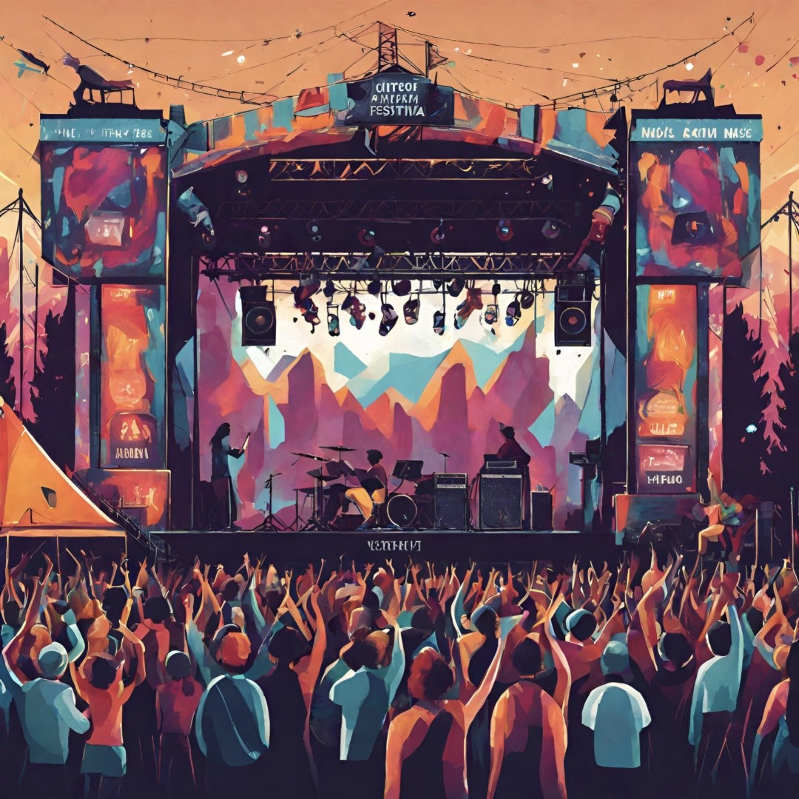

Back To Column List
フェス初心者向け持ち物紹介
フェスが再開され始めて、初めてフェスへいくという方も多いのではないでしょうか？
「フェスって何を持っていけばいいの？」という疑問にお答えします！
クローク（手荷物預かり所）があるので、リュック等に荷物を入れて持っていき、クロークに上着や大きな荷物は預けてウェストポーチやサコッシュなどの小さいバッグに必要なものを入れ替えるのがおすすめです。
私は小さめのメッセンジャーバッグに入れています！
必須の持ち物
- ▼身分証
- お酒の提供に年齢確認が必要なフェスも
- ▼携帯充電器
- 気温や電波によって通常より電池の減りが早い
- ▼現金
- 基本的にはオンライン決済の使える場合が多いが、通信障害や機器故障で現金のみの場合あり
おすすめ持ち物
- ▼タオル
- 夏は必須！バンドによってはタオルを振り回したりする持っていて損はないかな？
現地で出演バンドのグッズを買うのも◎ - ▼ペットボトルホルダー
- 小さいバッグに入れずにバッグやベルト通しなどにつけることでバッグの容量確保
- ▼日焼け止め
- 屋外フェスでは必須！
- ▼レインコート（ポンチョ）
- 屋外フェスで急激な雨の可能性も！
フェスでは基本傘の使用禁止のためレインコートがおすすめ - ▼着替え
- 汗をかいた後や雨に濡れた後に着替えがあると◎
フェス会場で調達するのもおすすめ - ▼ネッククーラー
- 夏場のフェスはネッククーラーやハンディ扇風機が大活躍
そのほかにもおすすめ持ち物あれば教えてください！